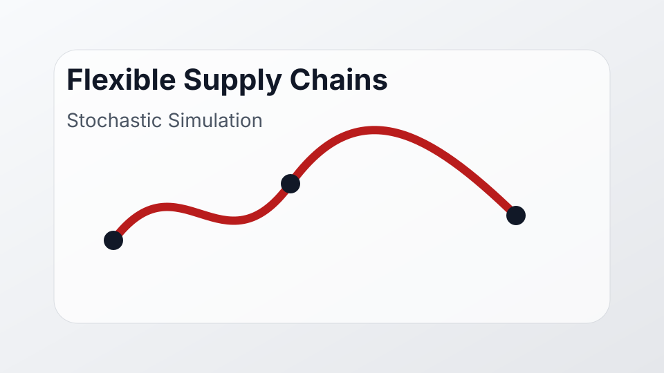

USC summer research project
3D Printing Flexibility in Supply Chains

As part of a summer research program at USC, I worked on simulation-based models for studying flexibility in supply chains, particularly in settings where 3D printing can replace or supplement traditional manufacturing.
Focus
- Stochastic simulation of assembly systems.
- Inventory dynamics, cycle times, and throughput.
- Comparison of flexible and traditional production assumptions.
- Operations research applications in supply chain resilience.
Status
Summer research project; ongoing technical write-up and visualization work.